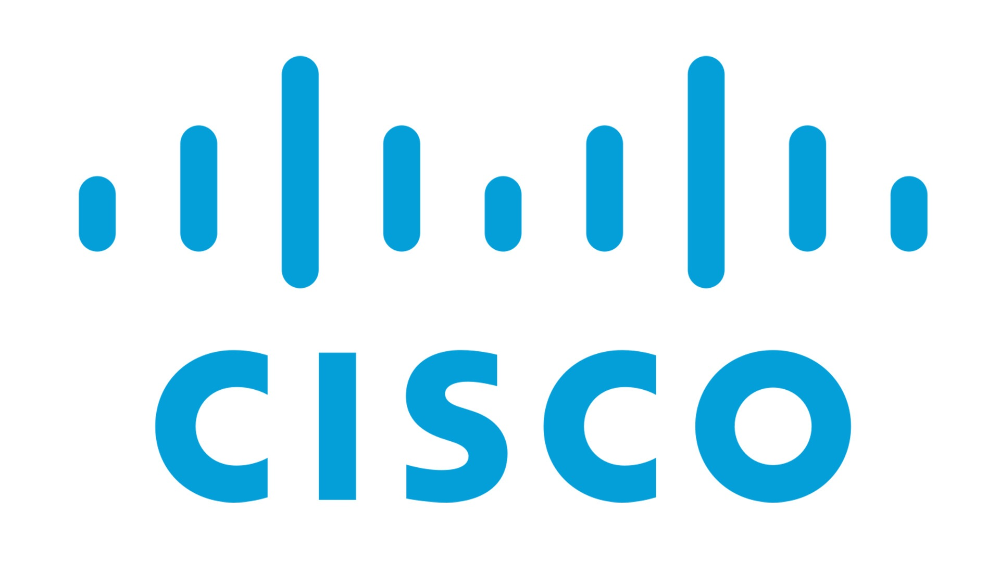

Compétences:

- 
-


• Âge: 31 ans
• Adresse: 6 rue Jean-François Leca, 13002 Marseille
• Téléphone portable: 06-34-69-51-44
• Mail: walid.saad-el-khalid@laplateforme.io
Mon objectif professionnel est de me diriger dans le Développemet Web ou la Cybersécurité.
En tant que développeur Web, je pourrais créer des solutions innovantes
pour résoudre des problèmes réels, afin d'apporter un impact positif à travers la technologie.
La Cybersécurité, quant à elle, me permettra de protéger les systèmes et les données contre
les menaces en constante évolution, en concevant des stratégies solides et en assurant un environnement
numérique sûr pour tous.
Novembre 2011/ Août 2023 :
• Opérateur dans un régiment de forces spéciales de l’Armée de Terre.
• Contre-terrorisme.
• Coordination lors d’opérations avec les armées internationales.
• Formateur et accompagnateur dans le cadre de missions avec des armées étrangères.
Août 2010 :
• Manoeuvre soudure.
• 2023: Certification ISTQB Foundation
• 2019: Brevet de Chef d’Équipe Haute-Montagne ; Pilote drone
• 2017: Brevet Alpiniste/Skieur Militaire ; Diplôme Piégeur – Dépiégeur de Combat
• 2015: Certificat Technique Élémentaire avec spécialité Stick Actions Spéciales
• 2011: Baccalauréat scientifique – Option Physique - Mention Assez Bien